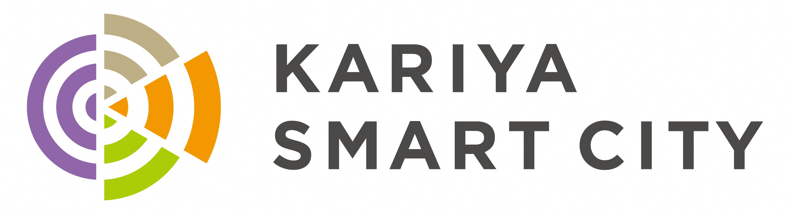

刈谷市「スポまち」プロジェクト参加チーム募集
【負担ゼロ・売上全額還元】
「素材提供だけ」で、
新しいファンを獲得しませんか？
メリット
チームが得られる3つのメリット
コスト
一切なし
企画・広報・設営運営はすべて事務局担当。スタッフ派遣も不要です。
グッズ売上
100%還元
会場販売の売上は全額チームへ。
手数料はいただきません。
新規層へ
アプローチ
街中開催により、スタジアムに来ない層へ魅力を届けます。
これだけでOK
お願いするのは、これだけです
参加の意思表示
映像・画像データの提供
（既存の試合録画・LIVE映像・選手写真など）
あとは事務局にお任せ！
「街中パブリックビューイング」と「AI選手マッチング」を実施し、ファンを増やします。
「街中パブリックビューイング」と「AI選手マッチング」を実施し、ファンを増やします。


本事業について
・本プロジェクトは、愛知県の採択を受けた実証実験です。
・普段スタジアムに足を運べない方達が、身近な場所で試合を楽しめる環境づくりを目指しています。
▼ 今後のステップ
担当より改めてご連絡を差し上げて、
10〜30分ほど短時間でご説明させていただきます。
【担当部署】 刈谷市企画政策課 / 株式会社トワール
TEL: 0566-95-0003 （刈谷市企画政策課）
主催：刈谷市 スポまちプロジェクト事務局